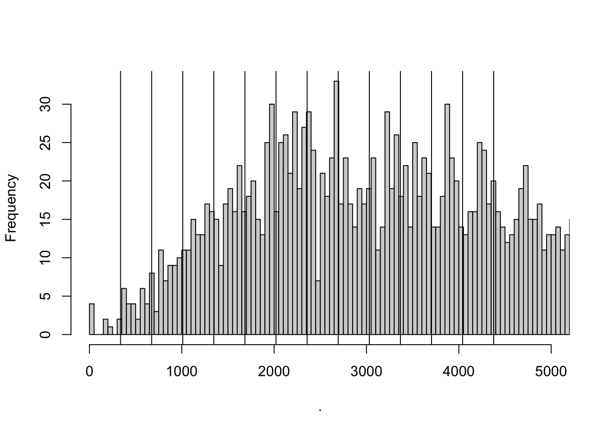
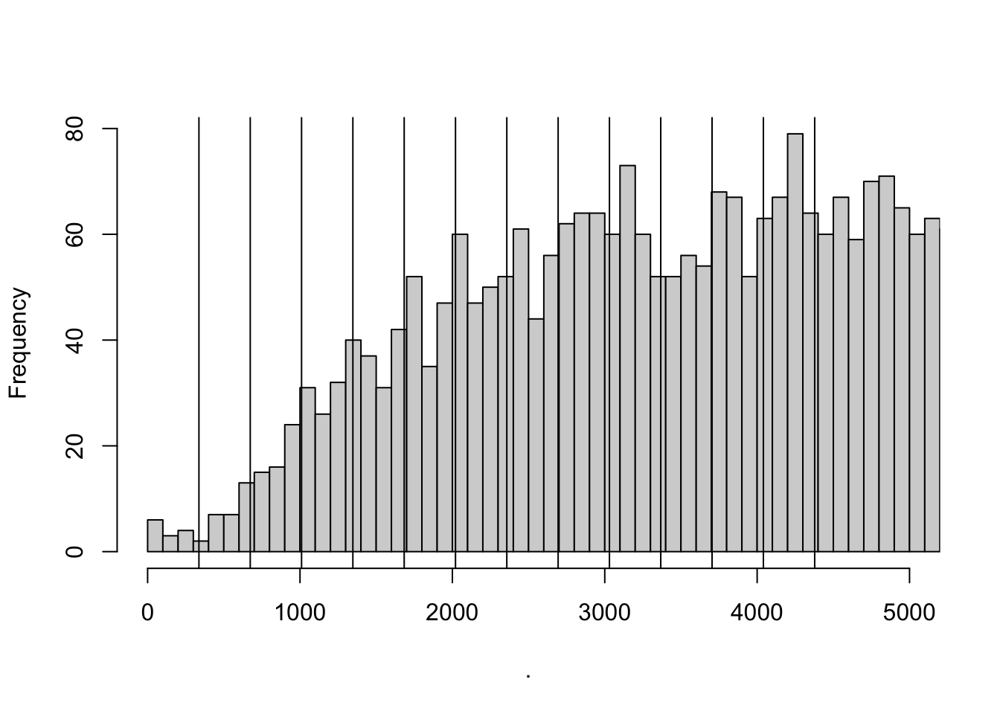

Tax evasion and productivity
Abstract
Corporate tax evasion through cost overreporting spreads internationally causing governments significant tax revenue losses. Detecting and measuring the magnitude of tax evasion remains a challenge, even for the few studies on overreporting where researchers can exploit administrative data. Moreover, if this evasion strategy accounts for economic losses as large as reported, then cost overreporting might bias estimates of production functions, especially productivity. This paper addresses both issues. I first provide a novel strategy to estimate cost overreporting using commonly available firm-level data. I then formally show that ignoring cost overreporting leads to downward biased productivity estimates. Finally, I demonstrate how to recover productivity in the presence of tax evasion.
Updates
- Simple model that incorporates evasion decision and size endogenously
- Colombian Corporate tax system
- Identification strategy for Colombia
1 A parsimonious model of tax evasion through input overreporting
Price-taking firms maximize expected after-tax profits. Firms choose the flexible input \(M_{it}\) to produce output \(Y_{it}\) given output and input prices \(\{P_{t}, \rho_t\}\), a common technology, the production function (Equation 1), and their productivity \(\omega_{it}\).
\[ Y_{it}=G(M_{it})\exp(\omega_{it}+\varepsilon_{it}) \tag{1}\]
As standard in the literature, productivity \(\omega_{it}\) is known to firms when they take input decisions. This is the well-known endogeneity problem of simultaneity. On the other hand, firms face output shocks. The output shock \(\varepsilon_{it}\) is not part of the firms’ information set.
The model departs from the literature by allowing firms to overreport their inputs \(e_{it}\) to reduce their tax burden and optimize after-tax profits. Firms, then, consider in their optimization problem the profit tax \(\tau\), the evasion penalty/cost \(\kappa(e)\), and the probability of detection \(q_{it}(e_{it}|\theta_{it})\).
Firms solve Equation 2 \[ \begin{aligned} \max_{M_{it}, e_{it}\in [0,\infty), } [1-q_{it}(e_{it}|\theta_{it})]&\left[(P_t\mathbb{E}[Y_{it}]-\rho_{t} M_{it})-\tau\left(P_t\mathbb{E}[Y_{it}]-\rho_{t} (M_{it}+e_{it})\right)\right]\\ +q_{it}(e_{it}|\theta_{it})&\left[(1-\tau)(P_t\mathbb{E}[Y_{it}]-\rho_{t} M_{it})-\kappa(e)\right] \\ \text{s.t. }\; Y_{it}=G(M_{it})\exp(\omega_{it}+\varepsilon_{it}) \end{aligned} \tag{2}\]
The probability of detection \(q_{it}(e_{it}|\theta_{it})\) is monotonically increasing in the amount evaded \(e_{it}\), conditional on the type of the firm \(\theta_{it}\). Intuitively, for a given type, firms that evade more are more likely to get caught.
The type of the firm \(\theta_{it}\) might be discrete, like the type of juridical organization, or continuous, like the level of revenue1. Some types might be more likely to be detected if the firm engages in tax evasion. For example, in contrast to other types of juridical organizations in Colombia, corporations are closely supervised and are required to have an auditor. That is, for a given level of tax evasion \(e_0\) and two different types \(\theta' \not= \theta \in \mathbfcal{\Theta}\), then \(q(e_0|\theta')\ge q(e_0|\theta)\).
If the type \(\theta\) is continuous, it might be a function of inputs; for example, level of revenue. Firms will then affect their probability of detection \(q(e|\theta)\) in two ways: directly, by choosing how much they evade \(e\); and indirectly, when choosing inputs \(M\).
The optimal decision of the firm will depend on the fiscal environment \(\Gamma=\{\tau, \kappa, q \}\), namely the tax rates, the penalty/cost of detection, and the probability of detection.
The firms’ problem (Equation 2) can be rewritten as follows, \[ \begin{aligned} \max_{M_{it},e_{it}} \mathbb{E}[\pi_{it}|\Gamma] = &(1-\tau)\left(\mathbb{E}[Y_{it}]-\frac{\rho_{t}}{P_t} M_{it}\right)+[1-q_{it}(e_{it}|\theta_{it})]\left(\frac{\rho_{t}}{P_t}e_{it}\tau\right) -q_{it}(e_{it}|\theta_{it})\kappa(e_{it}) \\ &\text{s.t. }\; Y_{it}=G(M_{it})\exp(\omega_{it}+\varepsilon_{it}) \end{aligned} \]
Intuitively, if the firm overreports her inputs’ cost, she will get the share of the value she overreported with probability \((1-q)\) and she will be penalized with probability \(q\).
Assuming well-behaved functions and no corner solutions, the first-order conditions lead to the following system of differential equations,
\[ G_M(M_{it})\exp(\omega_{it})\mathcal{E}-\frac{\rho_{t}}{P_t} = \frac{1}{(1-\tau)}\frac{\partial q(e_{it}|\theta_{it})}{\partial \theta_{it}}\frac{\partial \theta_{it}}{\partial M}\left[\frac{\rho_t}{P_t}e_{it}\tau+\kappa(e_{it})\right] \tag{3}\]
\[ [1-q(e_{it}|\theta_{it})]\frac{\rho_t}{P_t}\tau-q(e_{it}|\theta_{it})\kappa'(e_{it})=q'(e_{it}|\theta_{it})\left[\frac{\rho_t}{P_t}\tau e_{it} + \kappa(e_{it})\right] \tag{4}\]
where \(\mathbfcal{E}=\mathbb{E}[\exp(\varepsilon_{it})]\). The type of firms is continuous and increasing on the input. The probability of detection is increasing in the type continuum. In particular, \(\frac{\partial q(e_{it}|\theta_{it})}{\partial \theta_{it}}\frac{\partial \theta_{it}}{\partial M}\ge0\).
The left-hand side of Equation 3 is the familiar marginal output of inputs and the price ratio. In the absence of incentives’ distortions induced by the fiscal environment, they are equal. But now, the equality holds no more. There’s a wedge arising from the fiscal environment. The right-hand side of the equation is positive by the assumptions of the model.
Equation 4 solves for the optimal evasion decision. The left-hand side is the marginal benefit net of the marginal cost of evasion. The right-hand side is the rate of change of the probability of detection due to a change in evasion weighted by the benefit and cost of evading.
1.1 Case 1 (Independece): \(q(e|\theta)=q(e)\) and \(\kappa(e)=\kappa_0\)
Consider the case when the probability of detection is independent of type, \(q(e|\theta)=q(e)\), and the evasion cost is constant \(\kappa(e)=\kappa_0\). This could be the case if the type is the juridical organization of the firm and the penalty of evading is constant for the type of juridical organization. The type of the firm, and therefore the probability of detection, does not change with the firm’s input decisions.
In this case, the first-order conditions of Equation 2 with respect to the input \(M_{it}\) and the tax evasion \(e_{it}\) yield the following
\[ G_M(M_{it})\exp(\omega_{it})\mathcal{E}=\frac{\rho_{t}}{P_t} \tag{5}\]
\[ e_{it}=\frac{1-q(e_{it})}{q'(e_{it})}-\frac{\kappa_0}{\frac{\rho_{t}}{P_t}\tau} \tag{6}\]
Equation 5, the well-known optimality condition, says that the price ratio is equal to the marginal product of the inputs.
Likewise, Equation 6 reveals the firms’ optimal tax evasion decision decreases if the probability of detection \(q(e_{it})\) or the penalty of evading \(\kappa\) increases. Tax evasion also depends on how sensitive the probability of detection is to the level of evasion \(q'(e)\). In particular, greater sensibility will result in lower levels of evasion.
Note that the net change of tax evasion due to an increase in the relative prices \(\frac{\rho_{t}}{P_t}\) or the tax rate \(\tau\) is not evident at first sight. The net effect will also depend on the change in the detection probability induced by the changes in the relative prices or the tax rate. In particular, an increase in relative prices \(\frac{\rho_{t}}{P_t}\) or the tax rate \(\tau\) will incentivize a higher tax evasion level, however, a higher tax evasion level will increase the probability of detection —depending on the shape of the probability as a function of \(e\)—, so it will deter higher levels of evasion. An increase in the tax rate, for instance, will only increase tax evasion if the change in the tax rates increases the incentives to evade more than the decrease in the incentives due to the changes in the detection probability.
Formally, suppose a firm increases its tax evasion, \(e_1-e_0>0\) because of an increase in taxes \(\tau_1>\tau_0\). Then, it follows that
\[ \left(\frac{\tau_1-\tau_0}{\tau_1\tau_0}\right)\frac{P\kappa}{\rho}> \left(\frac{1-q(e_1)}{q'(e_1)}-\frac{1-q(e_0)}{q'(e_0)}\right) \]
The change in the probability of detection weighted by the slope of the probability function should be less than the change in the tax rate weighted by the penalty of evading and the relative prices2.
1.2 Case 2 (Spain): Discrete increase in the probability of detection after a certain threshold of revenue
In Spain, the Large Taxpayers Unit (LTU) of the tax authority focuses exclusively on firms with total operating revenue above 6 million euros. The LTU has more auditors per taxpayer than the rest of the tax authority, and these auditors are on average more experienced and better trained to deal with the most complex taxpayers. This LTU creates a discontinuity in the monitoring effort of the tax authority. Consequently, at this arbitrary revenue level, the probability of detection increases discretely (Almunia and Lopez-Rodriguez 2018).
In this scenario, depending on the productivity shock, the firm might be better off choosing not to produce past the revenue threshold. Indeed, for a relevant range of productivity draws \(\Omega^B=[\omega^L, \omega^H]\), the firms will not choose to grow past the revenue threshold if the expected after-tax profits of staying small are greater than the expected after-tax profits of growing.
In the model, there is now a threshold of revenue \(\theta^L\) after which the probability of detection increases discretely. To make things simpler, assume that before the threshold, the probability changes as a function of evasion but does not vary conditional on size. After the threshold, the probability increases for every level of evasion but does not vary conditional on size.
Formally, let \(\Theta_{L} = \{\theta_i : \theta_{i} < \theta^L \}\) and \(\Theta_{H} = \{\theta_i : \theta_{i} \ge \theta^L \}\), then for all \(e_0\) and \(\theta'_i\not=\theta_i\), \(q(e_0|\theta_i \in \Theta_k)=q(e_0|\theta'_i \in \Theta_k)\) with \(k=\{L,H\}\), but \(q(e_0|\theta'_i \in \Theta_H)\ge q(e_0|\theta_i \in \Theta_L)\).
Firms’ revenue with productivity draw \(\omega^L\) corresponds exactly to the enforcement threshold \(\theta^L\). Production and reporting decisions of firms with productivity draws below \(\omega^L\) are not affected by the change in the probability of detection. Firms choose their inputs according to Equation 5 and their evasion decision according to Equation 4. Firms with productivity draws above \(\omega^U\)
Firms with productivity \(\omega_{i}\in \Omega^B\) will choose the input level \(\tilde{M}_{i}\) resulting in an expected revenue below the threshold \(\theta_{i}<\theta^L\), if the expected after-tax profit of staying small are greater than growing, \(\mathbb{E}[\pi_{i}|\Theta_L, \Omega^B]-\mathbb{E}[\pi_{i}|\Theta_H, \Omega^B]\ge0\).
The optimal input choice \(M^*_{i}\) for firms with productivity \(\omega_i\in\Omega^B\) implies an expected revenue greater than or equal to the threshold \(\theta^*_{i}\ge \theta^L\). Let the expected profits given \(M^*_{i}\) and the optimal tax evasion in the range of size \(\theta_l\), \(e^*_{it}\), is \(\pi_l\equiv\mathbb{E}[\pi(M^*_{it}, e^*_{it})|\theta_l]\). Let \(\tilde{M}_{it}\) be the input level such that the expected revenue is below the threshold \(\tilde{s}_{it}<\theta^L\) and \(\tilde{e}_{it}\) be the optimal tax evasion in the range of size \(\theta_s\). Let also the expected profits of staying small are \(\pi_s\equiv\mathbb{E}[\pi(\tilde{M}_{it},\tilde{e}_{it})|\theta_s]\).
In this second case, therefore, firms might optimally choose to remain small if, for a low productivity shock, the expected profits of not growing are greater than the expected profits of growing \(\pi_l<\pi_s\). Firms choosing to remain small will lead to a bunching below the threshold in the size distribution of firms.
Besides the higher levels of evasion before the threshold —simply because of the higher probability of detection—, we can also expect bunching firms to evade more than their similar-sized peers. At \(\tilde{M}_{it}\), the optimization condition of Equation 5 no longer holds, hence, the marginal product of the input is now greater than the relative prices. Therefore, according to Equation 6, bunching firms would compensate for their higher costs by increasing overreporting.
1.2.1 What’s new?
- GOPF framework with public data vs bunching estimator with private administrative data
- Focus on input overreporting rather than on revenue underreporting
- Bunching effects are real. Bunching firms optimally forgo higher revenue levels. Almunia and Lopez-Rodriguez (2018) argue effects are not real, just fake underreporting.
1.3 Case 3 (Colombia): Discrete increase in the tax rate after a revenue threshold
In Colombia between 1981 and 1991, individual firm proprietors were subject to the individual income tax schedule. Individuals had incentives to not form juridical organizations to avoid double taxation. While corporations were closely supervised by the Superintedent of Corporations and are required to have an auditor, all other firms were subject to the regular monitoring efforts of the tax authority which such suffered from severe limitations and inefficiencies at the time.
In this case, after the revenue threshold, the tax rate increases discretely but the probability of detection does not. The jump in the tax rate generates the incentive to increase the evasion, however a higher level of evasion increases the cost of evading by increasing the probability of detection. If the cost of an increased evasion outweights the benefits of growing past the revenue threshold, firm would bunch below the cutoff.
1.4 Case 4 (Mexico): Irreversible change in tax regime after a revenue threshold
In Mexico, firms with annual revenues below 2 million pesos are taxed under the REPECO (Regime de Pequeños Contribuyentes) regime of small contributors at 2 percent of annual revenues, while firms above that threshold are taxed under the general regime at 30 percent. Firms must transition to the general regime if revenues increase beyond the threshold. Once in the general regime, firms cannot revert to the REPECO regime.
Firms’ decision is now dynamic. Firms will maximize the sum of current and future after-tax profits. The discrete jump in the tax rate will lead to a bunchigh below the threshold. Moreover, the bunching will be exacerbated because firms will choose to grow past the cutoff only if the future productivity shocks allow the firm to continue to be profitable.
2 Colombia 1981-1991
2.1 Colombian Corporate Tax System
The relevant corporate taxes for input overreporting are the Corporate Income Tax and the Sales Tax that (gradually transformed into a kind of Value-Added Tax).
High levels of overall tax evasion during the period. No penalties, inefficient monitoring system, overburdened authority, and legal loopholes.
2.1.1 Corporate Income tax
The Corporate Income Tax depended on the type of juridical organization of the firm. For tax purposes, we can classify firms as Corporations, Partnerships, Limited Liability Companies, and Individual Proprietorships.
Corporations were taxed at a fixed rate of 40%, while Partnerships and Limited Liability companies at 20%. Individual proprietors were subject to the graduated Individual Tax Schedule consisting of 56 rates, ranging from 0.50 to 51 percent.
Corporations were taxed on their distributed dividends, while parternships and limited liability companies were taxed on their profits, whether or not distributed. Owners of juridical organizations were double taxed, at the firm and the individual level, whereas the income of proprietorships was taxed only once.
Moreover, Corporations were subjecto to the Superindent of Corporations and were closely supervised, being required to have an auditor.
Since 1974, individuals and juridical organizations, except for limited liability companies, were subject to the minimum presumptive income. Rent (income and profits) was presumed to be no less than 8 percent of net wealth (assets less depreciation, real estate, livestock, securities). Firms with profits lower than 8 percent of their wealth had incentives to underreport capital. Firms with larger profits had incentives to overreport inputs and underreport sales.
Exemptions were granted for automobile producers, private electrical companies, airlines, publishing, and reforestation sectors, and for various activities in selected regions (primarily “frontier” and other less developed ones).
2.1.2 Sales taxes
Sales taxes were originally targeted at the manufacturing sector on finished goods and imports. Since 1974, manufacturers were allowed to credit taxes paid on any purchse made by the firm, except the acquisition of capital goods (Perry and Triana 1990). The credits worked through a system of refunds. Consequently, the tax became a kind of value-added tax (VAT). The VAT was extended to many services.
The basic rate was 15 percent. There was also a preferential rate of 6 percent for “wage goods” (clothing, footwear, and major inputs used for building popular housing), and a rate of 35 percent for luxury goods. Exports, foodstuff, drugs, and textbooks were excluded from the begining. Also excluded were inputs, transportation equipment, agricultural machinery, and equipment.
2.1.3 Take-aways
- Corporations are the least likely to evade because the probability of detection is higher for them.
- Firms’ incentives to overreporting inputs was heterogeneous within industry because it depended on the effective sales tax rate which varied according to the firm’s location and sales composition (inputs to other firms, to consumers, to foreign market), and the type of juridical organization.
- Individual proprietorships (and maybe low revenue limited liability companies) were likely to bunch at the individual income thresholds.
2.2 Fiscal Reforms
During this period, Colombia went through three major fiscal reforms (1983, 1986, 1990).
2.2.1 1983
The 1983 reform tried to alleviate the double taxation by introducing a tax credit of 10% of dividends received for individuals.
In addition, Law 9 of 1983 instituted a measure of presumptive income equal to 2 percent of gross receipts to supplement the measure based on net wealth. This reform was aimed specifically at the commerce and service sectors; the former were thought to evade the wealth-based presumptive tax by systematically understating inventories. In addition, it extended the presumptive income tax to limited liability companies.
In 1983, the value-added tax (VAT) was extended to the retail level, with a simplified system being made available to small retailers in the effort to ease compliance costs and administrative burden.
The 1983 reform realively unified the value-added tax (VAT) rates by combining previously taxed goods at 6% and 15 percent into 10%. The number of the products and services that were levied expanded.
In 1984, exemptions for agricultural machinery, transportation equipment, and certain other goods were eliminated.
2.2.2 1986
The 1986 reforms unified the taxation of corporations and limited liability companies by taxing both at a rate of 30%. The top tax rate applied to individual income was reduced from 49 to 30%.
Double taxation was eliminated. The reform exempted corporate dividends and participation in profits of limited liability companies from tax at the individual shareholder/owner level.
Lastly, the 1986 reform relocated the tax collection and reception of tax reports to the banking system, among other things.
2.2.3 1990
The 1990 reform increased the VAT from 10% to 12%. See section the appendix for more details on the fiscal reforms.
Intuitively, we expect higher levels of tax evasion if tax rates increase. On the other hand, reporting more information to the authority —like the firms required to report and pay profit taxes in 1983—, or having a third party reporting on your private information — like the banking system being responsible for the collection and reception of tax reports in 1986— would decrease tax evasion.
2.3 Data
The data is a well-known data set that has been used in the estimation of production functions and productivity before. The dataset comes from the Annual Survey of Manufacturing (EAM) and contains information about manufacturing firms with more than 10 employees from 1981 to 1991.
Besides the information on output, intermediates, capital, and labor, the dataset includes the type of juridical organization, the sales taxes, and the metropolitan area and country region.

\[ log(s_{it})= \Phi(k_{it},l_{it},m_{it})+ \alpha_1Tax_{it}+\mathbf{\beta}_1'JurOrg_i + \beta_2'JurOrg_i\times\gamma_t+ \gamma_t + \gamma_{ind} +\gamma_{metro} + \varepsilon_{it} \tag{7}\]
| feols(log_shar..1 | feols(log_share..2 | feols(log_share..3 | feols(log_share..4 | |
|---|---|---|---|---|
| (1) | (2) | (3) | (4) | |
| Dependent Var.: | \(log(s)\) | \(log(s)\) | \(log(s)\) | \(log(s)\) |
| Sales Tax Rate | 0.5941** (0.1366) | 0.7719*** (0.0976) | 0.7719*** (0.0973) | 0.7520*** (0.1001) |
| J. Org. (0) | 0.4412** (0.1081) | 0.4285** (0.1088) | 0.4285** (0.1082) | 0.4249** (0.1064) |
| J. Org. (1) | 0.4492** (0.1077) | 0.4429** (0.1088) | 0.4429** (0.1082) | 0.4376** (0.1069) |
| J. Org. (2) | 0.4596** (0.1145) | 0.4434** (0.1141) | 0.4434** (0.1134) | 0.4480** (0.1116) |
| J. Org. (3) | 0.2757* (0.1145) | 0.3033* (0.1109) | 0.3033* (0.1104) | 0.3023* (0.1087) |
| J. Org. (4) | 0.4509** (0.1025) | 0.4471** (0.1035) | 0.4471** (0.1029) | 0.4431** (0.1014) |
| J. Org. (5) | 0.4619** (0.1193) | 0.4534** (0.1210) | 0.4534** (0.1204) | 0.4482** (0.1189) |
| J. Org. (6) | 0.3464** (0.0979) | 0.3397** (0.0973) | 0.3397** (0.0968) | 0.3369** (0.0964) |
| J. Org. (7) | 0.5487** (0.1571) | 0.5196** (0.1579) | 0.5196** (0.1571) | 0.5229** (0.1553) |
| J. Org. (8) | 0.2637. (0.1430) | 0.3024. (0.1377) | 0.3024. (0.1370) | 0.3068* (0.1349) |
| Fixed-Effects: | ----------------- | ------------------ | ------------------ | ------------------ |
| Industry | No | Yes | Yes | Yes |
| Year | No | No | Yes | Yes |
| Metro Area | No | No | No | Yes |
| _______________ | _________________ | __________________ | __________________ | __________________ |
| S.E.: Clustered | by: Industry & Year | by: Industry & Year | by: Industry & Year | by: Industry & Year |
| Observations | 41,467 | 41,467 | 41,467 | 41,467 |
| R2 | 0.57951 | 0.59731 | 0.59731 | 0.60142 |
| Within R2 | -- | 0.54058 | 0.53633 | 0.53876 |
\[ log(s_{it})= \Phi(k_{it},l_{it},m_{it})+ \mathbf{\beta}_1'JurOrg_i + \beta_2FiscalPd+\beta_2'JurOrg_i\times FiscalPd + \gamma_t + \gamma_{ind} +\gamma_{metro} + \varepsilon_{it} \tag{8}\]
| ..1 | ..2 | ..3 | ..4 | |
|---|---|---|---|---|
| (1) | (2) | (3) | (4) | |
| Dependent Var.: | \(log(s)\) | \(log(s)\) | \(log(s)\) | \(log(s)\) |
| J. Org. (0) x 83-86 fiscal period | -0.1112 (0.0647) | -0.1134 (0.0643) | -0.1019 (0.0612) | -0.1035 (0.0637) |
| J. Org. (1) x 83-86 fiscal period | -0.1163. (0.0619) | -0.1171. (0.0622) | -0.1091. (0.0592) | -0.1113. (0.0613) |
| J. Org. (2) x 83-86 fiscal period | -0.1462 (0.0888) | -0.1444 (0.0896) | -0.1308 (0.0866) | -0.1321 (0.0887) |
| J. Org. (3) x 83-86 fiscal period | -0.0793 (0.0605) | -0.0853 (0.0614) | -0.0779 (0.0583) | -0.0808 (0.0604) |
| J. Org. (4) x 83-86 fiscal period | -0.1401. (0.0722) | -0.1384. (0.0733) | -0.1260 (0.0699) | -0.1276 (0.0720) |
| J. Org. (5) x 83-86 fiscal period | -0.1068 (0.0592) | -0.1047 (0.0596) | -0.0963 (0.0570) | -0.0982 (0.0592) |
| J. Org. (6) x 83-86 fiscal period | -0.1566. (0.0827) | -0.1530. (0.0816) | -0.1474. (0.0805) | -0.1495. (0.0824) |
| J. Org. (7) x 83-86 fiscal period | -0.1840** (0.0545) | -0.1856** (0.0539) | -0.1747** (0.0516) | -0.1777** (0.0542) |
| J. Org. (8) x 83-86 fiscal period | -0.1989** (0.0540) | -0.1980* (0.0646) | -0.1896* (0.0612) | -0.1923* (0.0628) |
| J. Org. (0) x 87-91 fiscal period | -0.2045*** (0.0224) | -0.2146*** (0.0203) | -0.1936*** (0.0209) | -0.1938*** (0.0229) |
| J. Org. (1) x 87-91 fiscal period | -0.1942*** (0.0224) | -0.2028*** (0.0226) | -0.1858*** (0.0223) | -0.1856*** (0.0243) |
| J. Org. (2) x 87-91 fiscal period | -0.1675. (0.0832) | -0.1776. (0.0805) | -0.1536. (0.0794) | -0.1541. (0.0813) |
| J. Org. (3) x 87-91 fiscal period | -0.1631*** (0.0254) | -0.1832*** (0.0232) | -0.1676*** (0.0228) | -0.1667*** (0.0242) |
| J. Org. (4) x 87-91 fiscal period | -0.2694*** (0.0439) | -0.2738*** (0.0462) | -0.2533*** (0.0455) | -0.2533*** (0.0465) |
| J. Org. (5) x 87-91 fiscal period | -0.1904*** (0.0272) | -0.1995*** (0.0262) | -0.1803*** (0.0265) | -0.1799*** (0.0279) |
| J. Org. (6) x 87-91 fiscal period | -0.1127 (0.0655) | -0.1256. (0.0667) | -0.1120 (0.0634) | -0.1117 (0.0644) |
| J. Org. (7) x 87-91 fiscal period | -0.2389*** (0.0500) | -0.2454*** (0.0521) | -0.2212** (0.0520) | -0.2209** (0.0530) |
| J. Org. (8) x 87-91 fiscal period | -0.2547*** (0.0393) | -0.2593*** (0.0558) | -0.2429** (0.0547) | -0.2424** (0.0548) |
| Fixed-Effects: | ------------------- | ------------------- | ------------------- | ------------------- |
| Industry | No | Yes | Yes | Yes |
| Metro Area | No | No | Yes | Yes |
| Year | No | No | No | Yes |
| _________________________________ | ___________________ | ___________________ | ___________________ | ___________________ |
| S.E.: Clustered | by: Industry & Year | by: Industry & Year | by: Industry & Year | by: Industry & Year |
| Observations | 41,467 | 41,467 | 41,467 | 41,467 |
| R2 | 0.56230 | 0.57858 | 0.58367 | 0.58420 |
| Within R2 | -- | 0.51921 | 0.52254 | 0.51882 |
References
Almunia, M., and Lopez-Rodriguez, D. (2018), “Under the radar: The effects of monitoring firms on tax compliance †,” American Economic Journal: Economic Policy, 10, 1–38. https://doi.org/10.1257/pol.20160229.
Perry, G., and Triana, L. O. de (1990), “The VAT in colombia,” in Value Added Taxation in Developing Countries, eds. M. Gillis, C. S. Shoup, and G. P. Sicat, The World Bank, pp. 180–194.
Footnotes
Level of revenue is a common measure for fiscal authorities to determine a firm’s taxes and/or level of scrutiny, e.g., Mexico, Spain, Colombia, Ecuador, and Chile (?).↩︎
An analogous condition for an increase in relative prices leading to higher levels of tax evasion exists. Under this condition, the model is consistent with the literature that macroeconomic downturns lead to higher evasion.↩︎